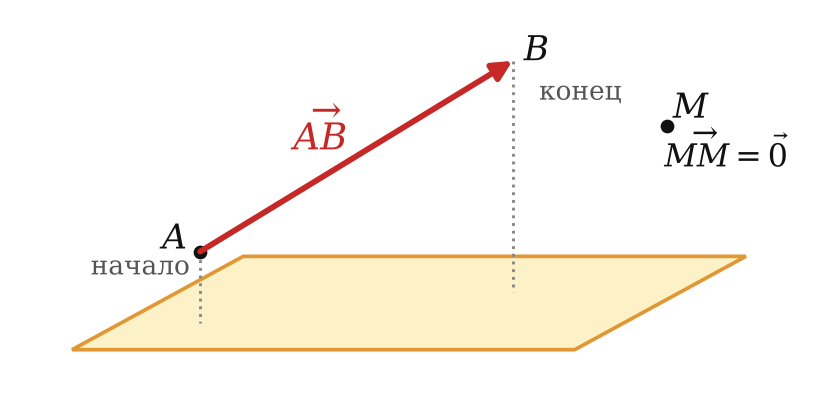
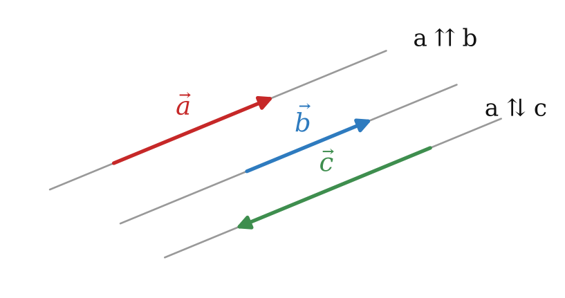
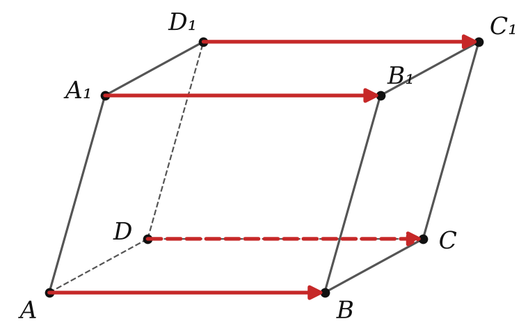
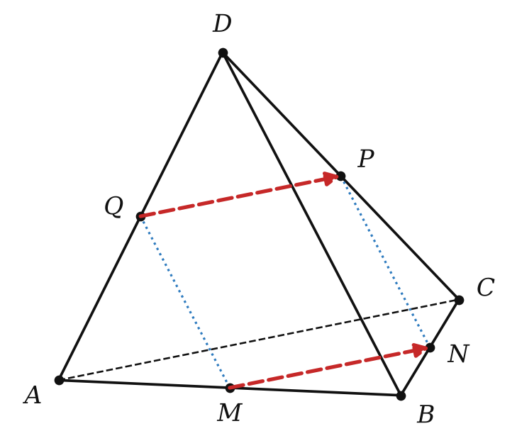

длина, коллинеарность, равенство векторов
Нулевой вектор 0: начало = конец, длина 0.

На скрещивающихся прямых — не коллинеарны.

AB = DC = A₁B₁ = D₁C₁

| векторы | коллинеарны | направление | равны |
|---|---|---|---|
| AB, DC | да | ↑↑ | да |
| AB, C₁D₁ | да | ↑↓ | нет |
| AB, CC₁ | нет | — | нет |
